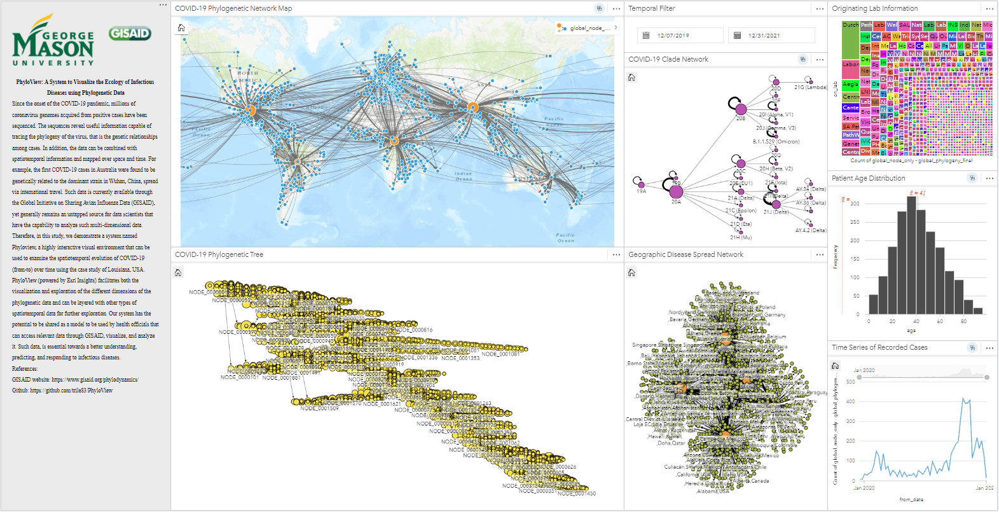
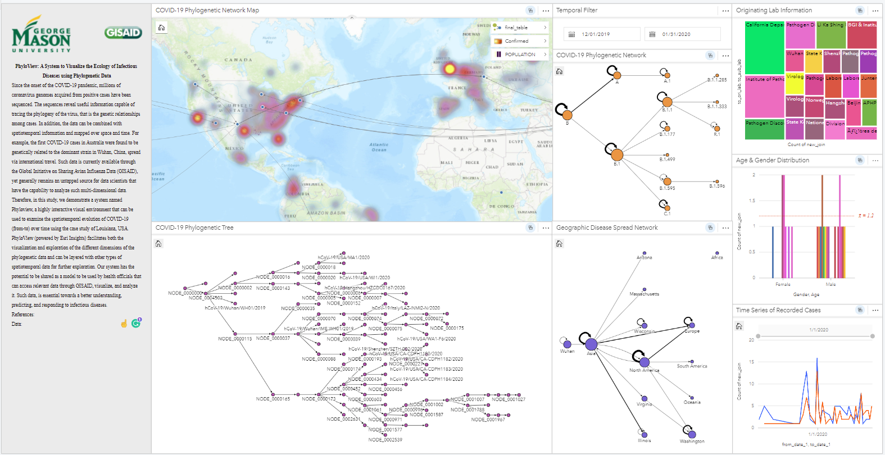

Projects
Below are the research projects that I worked on from 2019 to the present, which focus on Computer Vision and Image Classification for Geospatial and Remote Sensing data.
Novel Riesz-Quincunx U-Net Variational Autoencoder for Satellite Image Denoising
Riesz-Quincunx-UNet Variational Auto-Encoder using Pytorch
Leveraging this property of the UNet, this study proposes to include a Riesz-Quincunx (RQ) wavelet transform, which combines:
Link to the published paper

Background
Multiresolution deep learning approaches, such as the UNet architecture, have achieved high performance in classifying and segmenting images.
Most traditional convolutional neural network (CNN) architectures commonly use pooling to enlarge the receptive field, which usually results in irreversible information loss.
The UNet architecture avoids this information loss by introducing skip connections that allow the reconstruction of lost information.
Read more
1) higher order Riesz wavelet transform
2) orthogonal Quincunx wavelets (commonly used to reduce blur in medical images) inside the UNet to reduce noise in satellite images and their time series.
Combining both approaches, we introduce a hybrid RQ-UNet variational autoencoder (RQUNet-VAE) scheme for image and time series decomposition used to reduce noise in satellite imagery.
By including denoising capabilities directly inside the UNet architecture, our RQUNet-VAE may improve downstream image processing tasks that use the traditional UNet architecture.
We show this result in two down-stream applications for multiband satellite images, including image time-series decomposition and image segmentation.
Dataset
In this study, we used satellite imagery from National Agriculture Imagery Program NAIP Data dataset with 3 bands (RGB) for segmentation experiment and Sentinel-2 Data data with 10 bands for reconstruction and denoising experiments.
The data is preprocessed to the size 256x256 for the training and prediction stages.
Results
The results showed that the novel CNN architecture was capable of removing artificial noise in the image while retaining the pixel intensity of the original image, which is very beneficial for further analysis and modeling.

PhyloView: A System to Visualize the Ecology of Infectious Diseases Using Phylogenetic Data
Data Visualization of Phylogenetic COVID-19 Disease Spread in 2019 to 2021
For example, the first COVID-19 cases in Australia were genetically related to the dominant strain in Wuhan, China, and spread via international travel.
These data are currently available through the Global Initiative on Sharing Avian Influenza Data (GISAID) yet generally remain an untapped resource for data scientists to analyze such multi-dimensional data.
Therefore, in this study, we demonstrate a system named Phyloview, a highly interactive visual environment that can be used to examine the spatiotemporal evolution of COVID-19 (from-to) over time using the case study of Louisiana, USA.
PhyloView (powered by ArcGIS Insights) facilitates the visualization and exploration of the different dimensions of the phylogenetic data and can be layered with other types of spatiotemporal data for further investigation.
Our system has the potential to be shared as a model to be used by health officials who can access relevant data through GISAID, visualize, and analyze it.
Such data is essential for a better understanding, predicting, and responding to infectious diseases.
Link to the published paper

Background
Since the onset of the COVID-19 pandemic, millions of coronavirus sequences have been rapidly deposited in publicly available repositories.
The sequences have been used primarily to monitor the evolution and transmission of the virus.
In addition, the data can be combined with spatiotemporal information and mapped over space and time to understand transmission dynamics further.
Read more
Dataset
This project used the dataset provided by GISAID, which is up-to-date on the phylogenetic spread of COVID-19 globally.
However, the data in the United States are recorded separately from state to state so there is a challenge in connecting all cases of COVID-10 spread across the country.
In this study, we focus on data from the state of Louisiana to demonstrate the ability of ArcGIS Insights and how it can visualize such complex data.
Results
Visualization Dashboard of Louisiana COVID-19 Spread

Link to the visualization dashboard
Additional collaboration research to fill the gap of GISAID data for better visualization, with Steven Tai and Victoria Gonzalez, on using ACCTRAN to handle information gap of COVID-19 spread network.
About
I'm a Ph.D. Candidate in Geography and Geospatial Science at George Mason University. My research focuses on using machine learning and deep learning models to perform image segmentation and image classification.
My research thesis focuses on the utilization of Machine Learning and Deep Learning models of Computer Vision and Image Classification on global satellite imagery.
Education
George Mason UniversityPh.D. in Earth Systems and Geoinformation Sciences (2020-present) - GPA: 4.0
Indiana University - Purdue University Indianapolis
Master of Science in Applied Data Science (2018 -2020) - GPA: 3.9
Texas Christian University
Bachelor of Business Administration in Accounting and Business Information Systems (2015-2018) - GPA: 3.6
Minor in Mathematics and Actuarial Science
Technical Background
- Machine Learning: Random Forest, Decision Tree, SVM, K-Means, PCA, Gradient Boosting, NLP
- Analytics: Python, Adobe Analytics, PHP, MS Excel, R, JavaScript, D3, Tableau, ArcGIS Insights, Numpy, Pandas
- Database Management: MS Visio, MySQL, NoSQL, MongoDB, PostGIS, Git
- Cloud Computing: Apache Spark, Microsoft Azure, Amazon Web Services, Hadoop
- Geoinformation: QGIS, Geopandas, Rasterio, GDAL, ENVI, ArcGIS
- Computer Vision: PyTorch, TensorFlow, Keras, CNN, LSTM, Image Semantic Segmentation, Image Denoising, Object Detection
Contact
Contact Information: tri dot le83 at outlook dot com